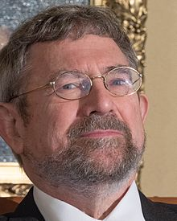

BARRY C. BARISH(1936-present)
Barry Clark Barish (born January 27, 1936) is an American experimental physicist and Nobel Laureate. He is a Linde Professor of Physics, emeritus at California Institute of Technology and a leading expert on gravitational waves.
| BARRY C. BARISH | |
|---|---|
| BORN | Barry Clark Barish January 27, 1936 (age 85) Omaha, Nebraska, U.S. |
| EDUCATION | University of California, Berkeley (BA, PhD) |
| SPOUSE(S) | Samoan Barish |
| CHILDREN | 2 |
| AWARDS | Klopsteg Memorial Award (2002) Member of the National Academy of Sciences (2002) Enrico Fermi Prize (2016) Henry Draper Medal (2017) Princess of Asturias Award (2017) Nobel Prize in Physics (2017) |
| SCIENTIFIC CAREER | |
| FIELDS | Physics |
| THESIS | A study of the reaction negative pion plus proton going to negative pion plus neutral pion plus proton at 310 and 377 MEV (1962). |
| DOCTORAL ADVAISOR | A. Carl Helmholz |
| DOCTORAL STUDENT'S | Kate Scholberg |
Barry C. Barish at Nobel Prize press conference in Stockholm, December 2017)
In 2017, Barish was awarded the Nobel Prize in Physics along with Rainer Weiss and Kip Thorne "for decisive contributions to the LIGO detector and the observation of gravitational waves". In 2018, he joined the faculty at University of California, Riverside, becoming the university's second Nobel Prize winner on the faculty.
BARRY C. BARISH:
DAVID J THAOULESS(1934-2019)
David James Thouless FRS ( 21 September 1934 – 6 April 2019) was a British condensed-matter physicist. He was the winner of the 1990 Wolf Prize and a laureate of the 2016 Nobel Prize for physics along with F. Duncan M. Haldane and J. Michael Kosterlitz for theoretical discoveries of topological phase transitions and topological phases of matter.
| DAVID J THAOULESS | |
|---|---|
| BORN | David James Thouless 21 September 1934 Bearsden, Scotland |
| DIED | 6 April 2019 (aged 84) Cambridge, England |
| NATIONALITY | British |
| Citizenship | United Kingdom |
| Alma mater | University of Cambridge (BA) Cornell University (PhD) |
| KNOWN FOR | Kosterlitz–Thouless transition Thouless energy Topological quantum numbers |
| SPOUSE(S) | Margaret Elizabeth Scrase (m. 1958) |
| CHILDREN | THREE |
| AWARD'S | Maxwell Medal and Prize (1973) Fellow of the Royal Society (1979) Holweck Prize (1980) Wolf Prize (1990) Member of the National Academy of Sciences (1995) Lars Onsager Prize (2000) Nobel Prize in Physics (2016) |
| SCIENTIFIC CAREER | |
| FIELD'S | Condensed matter physics |
| INSTITUTION | University of Washington University of California, Berkeley University of Birmingham Yale University |
| THESIS | The application of perturbation methods to the theory of nuclear matter (1958) |
| DOCTORAL ADVAISOR | Hans Bethe |
| NOTABLE STUDENT'S | J. Michael Kosterlitz (postdoc) |
| CAREER & RESEARCH | Thouless was a postdoctoral researcher at Lawrence Berkeley Laboratory, University of California, Berkeley, and also worked in the physics department from 1958 to 1959, giving a course on atomic physics.He was the first director of studies in physics at Churchill College, Cambridge, in 1961–1965, professor of mathematical physics at the University of Birmingham in the United Kingdom in 1965–1978, and professor of applied science at Yale University from 1979 to 1980, before becoming a professor of physics at the University of Washington in Seattle in 1980. Thouless made many theoretical contributions to the understanding of extended systems of atoms and electrons, and of nucleons.He also worked on superconductivity phenomena, properties of nuclear matter, and excited collective motions within nuclei. Thouless made many important contributions to the theory of many-body problems.For atomic nuclei, he cleared up the concept of 'rearrangement energy' and derived an expression for the moment of inertia of deformed nuclei. In statistical mechanics, he contributed many ideas to the understanding of ordering, including the concept of 'topological ordering'. Other important results relate to localised electron states in disordered lattices. |
DAVID J THOULESS LECTURE:
DUNCAN HALDANE(1951-PRESENT)
ফ্রেডরিক ডানকান মাইকেল হল্ডেইন এফআরএস (ইংরেজি: Duncan Haldane; জন্ম: ১৪ সেপ্টেম্বর, ১৯৫১) লন্ডনে জন্মগ্রহণকারী ব্রিটিশ পদার্থবিজ্ঞানী। তিনি যুক্তরাষ্ট্রের প্রিন্সটন বিশ্ববিদ্যালয়ের পদার্থবিজ্ঞান বিভাগের পদার্থবিজ্ঞান ইউজিন হিগিন্স অধ্যাপক এবং পেরিমিটার ইনস্টিটিউট ফর থিওরেটিকাল ফিজিক্সের বিশেষ বহিরাগত গবেষণা অধ্যাপক (ভিজিটিং রিসার্চ চেয়ার)।২০১৬ সালে তিনি ডেভিড জে. থাউলেস এবং জন মাইকেল কস্টারলিৎজের সাথে যৌথভাবে পদার্থবিজ্ঞানে নোবেল পুরস্কার লাভ করেন।
| এফ. ডানকান হল্ডেইন | |
|---|---|
| জন্ম | সেপ্টেম্বর ১৪, ১৯৫১ (বয়স ৬৯) লন্ডন, যুক্তরাজ্য |
| কর্মক্ষেত্র | কন্ডেন্সড মেটার থিওরি |
| প্রতিষ্ঠান | প্রিন্সটন বিশ্ববিদ্যালয় বেল ল্যাবরেটরিজ |
| প্রাক্তন ছাত্র | প্রাক্তন ছাত্র ক্রাইস্টস কলেজ, কেমব্রিজ |
| পরিচিতির কারণ | আংশিক কোয়ান্টাম হল ক্রিয়ার হল্ডেইন ছদ্মবিভব |
| উল্লেখযোগ্য পুরস্কার | অলিভার ই. বাকলি কন্ডেন্সড মেটার পুরস্কার (১৯৯৩) পদার্থবিজ্ঞানে নোবেল পুরস্কার (২০১৬) |
| ওয়েবসাইট | |
DUNCAN HALDANE LECTURE:
J. MICHAEL COSTERLITZ(1943-PRESENT)
John Michael Kosterlitz (born June 22, 1943) is a British-American physicist. He is a professor of physics at Brown University and the son of biochemist Hans Kosterlitz. He was awarded the 2016 Nobel Prize in physics along with David Thouless and Duncan Haldane for work on condensed matter physics.
| Michael Kosterlitz | |
|---|---|
| Born | John Michael Kosterlitz June 22, 1943 (age 77)[1] Aberdeen, Scotland, United Kingdom |
| Nationality | British |
| Citizenship | United States |
| Alma mater | University of Cambridge (MA) University of Oxford (DPhil) |
| Known for | Kosterlitz–Thouless transition |
| Awards | Nobel Prize in Physics (2016) Lars Onsager Prize (2000) |
| Scientific career | |
| Fields | Condensed matter physics |
| Institutions | Brown University University of Birmingham Cornell University |
| Thesis | Problems in strong interaction physics (1969) |
| Academic advisors | David Thouless (postdoc) |
| WEPSITE | |
|

Michael Kosterlitz at Nobel press conference in Stockholm, Sweden, December 2016 |
|
J. MICHAEL COSTERLITZ LECTURE: